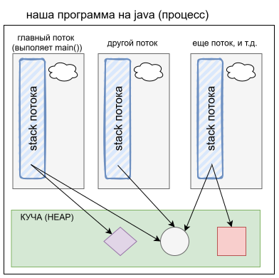
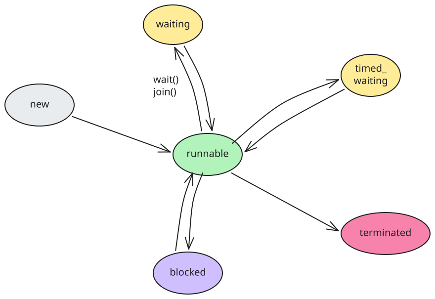
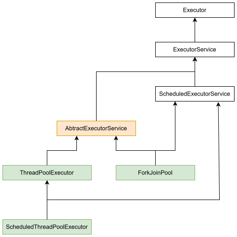
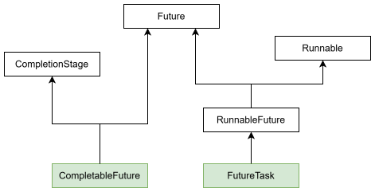

Процесс и поток - что такое
Ментальная модель процесса и потока
- Процессы и потоки в каждой ОС реализованы по-разному, нет смысла лишний раз думать об их реальном устройстве, лучше думать о них концептуально.
- Концептуально
процесс- это выполняющаяся программа, которой выделен свой участок памяти (память процесса)- Процессы изолированы друг от друга на уровне ОС. Могут общаться
только через специальные механизмы ОС (
IPC- Inter-Process Communication). Межпроцессное взаимодействие к многопоточке не относится.
- Процессы изолированы друг от друга на уровне ОС. Могут общаться
только через специальные механизмы ОС (
Потокконцептуально - это “рабочая единица”, которая выполняет код. Когда создается процесс, тогда создается и поток, в котором выполняется функция main.- В main можно создать другие потоки - получится многопоточная программа.
- ОС переключает потоки - поток работает какое-то время, потом приостанавливается, начинает работать другой поток и так по кругу. ОС выделяет потоку квант времени и отправляет его работать. Когда квант исчерпан, управление возвращается к ОС, она выбирает следующий поток, дает ему квант и отправляет работать. И т.д.

Куча и стек
- У процесса есть
куча(heap) - это область памяти, в которой хранятся ссылочные типы данных. Например, сделали new ArrayList() - объект списка хранится в куче. - У каждого потока есть персональный
стек- это область памяти, в которой хранятся агрументы, передаваемые в функции, и локальные переменные функций. Очевидно, эта область памяти находится в границах памяти процесса.- Например, в main создали несколько переменных - они хранятся в стеке потока.
- Т.о. куча - одна на все потоки, а стек у каждого потока - свой.
- В стеке хранятся примитивные типы данных, а на объектные хранятся ссылки, потому что как уже говорилось, объекты создаются в куче. Соответственно, когда у разных потоков есть ссылка на один и тот же объект в куче и они его как-то меняют, то возникают проблемы многопоточности.
Описываем код потока
Класс Thread
- https://docs.oracle.com/en/java/javase/26/docs/api/java.base/java/lang/Thread.html
- Класс Thread лежит в основе многопоточности в джаве. Все остальные механизмы в итоге сводятся так или иначе к нему.
class MyThread extends Thread { // <-- Наследуемся от Thread
@Override
public void run() { // <-- Сюда пишем код, который хотим выполнять в потоке
System.out.println("Поток: " + Thread.currentThread().getName());
}
}- Наследование от Thread - один из, но не лучший способ пользоваться
многопоточкой.
- Потому что
- Из-за того что в джаве нет множественного наследования, наследоваться от Thread может быть неудобно. Хочешь расширить бизнес-логику через наследование + сделать код многопоточным, получаешь облом, потому что наследоваться можно только от одного класса.
- “Голый” Thread
- Не умеет возвращать результат работы.
- Не умеет соединяться в цепочки.
- Много чего еще не умеет.
- Потому что
- Но тем не менее он основа всего и все остальное является разнообразной накруткой поверх него.
Функциональный интерфейс Runnable
- Концептуально Runnable - это “задача без результата”.
- https://docs.oracle.com/en/java/javase/26/docs/api/java.base/java/lang/Runnable.html
class MyTask implements Runnable { // <-- Через интерфейс удобнее добавлять многопоточность классу
@Override
public void run() { // <-- Тоже реализуем метод run
System.out.println("Поток: " + Thread.currentThread().getName());
}
}- Runnable vs Thread
- В джаве нет множественного наследования, поэтому если мы хотим выстроить через наследование бизнес-логику, то многопоточность внедрять в эту структуру через наследование будет не удобно. А интерфейсов классу можно добавлять сколько хочешь, поэтому добавление многопоточности классу через реализацию Runnable зачастую удобнее, чем через наследование от Thread.
- Сам Thread тоже реализует Runnable. Метод run у треда именно от этого интерфейса.
Функциональный интерфейс Callable
- Концептуально Callable - это “задача с результатом”.
- https://docs.oracle.com/en/java/javase/26/docs/api/java.base/java/util/concurrent/Callable.html
class MyTask implements Callable<String> { // <-- Указываем тип результата
@Override
public Integer call() throws Exception { // <-- Вместо run тут call
return 23; // <-- Можно вернуть результат
}
}- Thread и Runnable не предполагают возврат результата. Поэтому если
нужно что-то вычислить в потоке и вернуть результат - пользуемся
Callable. - В этом конспекте я его упомянул просто чтобы было. Подробно писать здесь о нем не буду, сделаю это в отдельном конспекте.
- TODO:
- throws Exception тут зачем?
Оформление кода через лямбду
- Для описания тела потока не обязательно писать отдельный класс, можно воспользоваться лямбдами.
- Лямбды и Thread
Thread t = new Thread(() -> { // <-- Передаем лямбду в конструктор
System.out.println("Поток: " + Thread.currentThread().getName());
});- Лямбды и Runnable Callable:
Runnable task = () -> {
System.out.println(Thread.currentThread().getName() + " runnable выполняется.");
};Callable<String> task = () -> {
System.out.println(Thread.currentThread().getName() + " callable выполняется.");
return "23 - Nichts ist so wie es scheint";
};- Лямбду можно передавать в любые места, где ожидается Runnable или Callable.
Запускаем поток в работу
Метод .start()
- https://docs.oracle.com/en/java/javase/26/docs/api/java.base/java/lang/Thread.html#start()
- В самом базовом случае, чтобы запустить поток, мы создаем экземпляр
Thread и вызываем на нем метод
.start():
public class Demo {
public static void main(String[] args) {
Thread t = new MyThread();
t.start();
}
}
class MyThread extends Thread {
@Override
public void run() {
System.out.println("Я работаю");
}
}- Повторно запускать поток нельзя. Один экземпляр - один поток. Когда метод run отработал до конца, поток уничтожается.
Важное отличие методов run() и start()
- Метод
run()- это просто обычный метод. Если его вызвать, то код просто выполнится в текущем потоке, как и любой другой обычный метод. - Метод
start()содержит всю многопоточную “обвязку”. Его вызов создает новый поток и выполняет в нем код, описанный в методе run. - Поэтому запускать поток надо именно через start().
Другие способы запуска
- Кроме “ручного” запуска через .start() существуют и другие способы
запуска потоков. О них будут отдельные конспекты.
- Например
- Запуск через пул.
- Запуск через CompletableFuture.
- Чтобы не перегружать базовый конспект, все подобные вещи я напишу в отдельных, а здесь просто упоминания оставлю, чтобы было примерно понятно, про что еще можно почитать.
- Например
Пример с Runnable
- Непосредственно саму по себе runnable-задачу запустить нельзя, потому что Runnable это просто интерфейс, он нужен только для описания задачи и не обладает механиками создания потока.
- Поэтому для выполнения задачи мы либо передаем ее в Thread, либо в
пул потоков, либо еще куда-то где принимают Runnable.
- Например, через Thread:
public class Demo {
public static void main(String[] args) {
Thread t = new Thread(
new MyRunnableTask()
);
t.start();
}
}
class MyRunnableTask implements Runnable {
@Override
public void run() {
System.out.println("runnable задача работает");
}
}- То же самое через лямбду:
public class Demo {
public static void main(String[] args) {
Thread t = new Thread(() -> {
System.out.println("runnable задача работает");
});
t.start();
}
}Пример с Callable
- Пример просто для “расширения кругозора”, он сильно забегает вперед, но в целом прикольный, поэтому решил не выбрасывать.
- Callable-задачи обычно запускают с помощью пула.
- Запустить Callable непосредственно через Thread так же, как мы
сделали с Runnable, не выйдет.
- Дело в том, что Thread работает исключительно с Runnable.
- Но поскольку все механизмы многопоточки под капотом все равно сводятся к использованию Thread, то и Callable, и все остальное в итоге является просто хитрой оберткой над базированным Runnable.
- Очень примерно это можно представить как-то так:
Callable<Integer> task = () -> 23;
FutureTask<Integer> futureTask = new FutureTask<>(task);
Thread thread = new Thread(futureTask);
thread.start();
Integer result = futureTask.get();- Если интересно, вот дока по FutureTask. Этот класс реализует и Runnable, и Future, поэтому его можно и в тред передать, и результат получить.
Разновидности потоков
Нативные и виртуальные потоки
- Нативные потоки - это настоящие потоки ОС, которые JVM создает и управляет через механизмы самой ОС.
- Виртуальные потоки появились в Java 21. Эти потоки JVM создает и
управляет самостоятельно, без ОС.
- Конечно они выполняются внутри реальных потоков ОС, но сами по себе являются просто какими-то программными сущностями внутри JVM, которые она хитро монтирует размонтирует туда-сюда на реальные потоки.
- Грубо говоря, если создать просто 100 обычных инстансов Thread, то это будет 100 нативных потоков ОС, т.е. отношение “созданные нами потоки : потоки ОС” будет 1:1. А если создать 100 виртуальных потоков, то это отношение не будет 1:1, все это само распределится грамотнее и аккуратнее. Поэтому виртуальных потоков можно создавать гораздо больше, чем нативных.
- По умолчанию когда мы создаем поток через
new Thread()он нативный. Виртуальный можно создать например черезThread.ofVirtual()илиThread.startVirtualThread(). - TODO: объяснение годится для самого стартового понимания, там есть
разные нюансы, явление
pinning, критические секции в коде влияют на производительность и т.д. В моменте разобраться просто невозможно, стоит к этой теме вернуться предметно на конкретной проблеме задаче, иначе вейст времени будет пытаться разобраться “абстрактно”.
daemon и не-daemon (user) потоки
user thread(или “не-daemon”) потоки - это потоки, которые концептуально предназначены для выполнения полезной “бизнес-работы”.- JVM не завершается, пока есть работающие юзер-треды. Она дожидается, пока они доработают.
daemonпотоки - это потоки, которые концептуально являются вспомогательными, “обслуживающими”.- Демонов JVM не дожидается. Демоны могут прерваться внезапно, поэтому в них нельзя напрямую открывать ресурсы, потому что они могут быть не закрыты корректно.
- TODO: вписать реальные примеры, когда попадется хороший и наглядный, безо всякого этого “логирования, мониторинга” и прочего нейробреда.
Жизненный цикл потоков

- TODO: мб еще добавить на картинку методы, при которых переход происходит?
- Состояния
new- поток просто создан через new и его еще не запускали.runnable- когда на потоке вызвали .start(). Причем физически поток мог еще не начать работу, а просто сидит ждет выделения ресурсов, но состояние уже runnable.blocked- когда поток пытается захватить монитор (входит в syncronized-участок кода), а монитор уже занят.terminated- метод run выполнился, т.о. поток завершился и подлежит уничтожению.waiting- TODOtime_waiting- TODO
- Детали
- blocked и waiting на уровне ОС это одно и то же. Отличаются они в JVM, как маркеры причины ожидания.
Взаимодействие с потоком
Прерывание выполнения
- Метод
.interrupt()у объекта потока. Он устанавливает флаг прерыванияisInterruptedв true.- https://docs.oracle.com/en/java/javase/26/docs/api/java.base/java/lang/Thread.html#interrupt()
- Сам по себе ни вызов метода, ни установка флага поток не прерывают,
это просто как сигнал “давай заканчивай”, а мы уже внутри кода потока
сами должны этот флаг проверять и если он установлен, то завершать
поток.
- Под завершением потока подразумевается, по сути, выполнить до конца метод run. Например, если у нас поток крутит бесконечный цикл, в котором выбирает сообщения из очереди, то мы просто доделываем очередной шаг цикла и выходим из него через break например. Ну и выполняем классическую “очистку ресурсов” и т.д. Или если в потоке не цикл, а просто какая-то тяжелая долгая работа, состоящая из нескольких шагов, то можно например после каждого шага можем проверять флаг и если он установлен, то не делать остальные шаги. В общем, “завершить поток” это не какая-то магия, а просто дать методу run завершиться.
- Методы вроде sleep(), wait(), join() переводят поток в состояние
ожидания. Если вызвать .interrupt() на потоке, который в этот момент
“отдыхает”, то эти методы выбрасывают исключение
InterruptedException. Оно проверяемое, поэтому компилятор заставит обработать либо пробросить.- При возникновении этого исключения флаг прерывания сбрасывается в
false. Обычно его надо после отлова исключения руками вернуть в true,
чтобы вызывающий код, который приказал потоку прерваться, видел что
поток прерван.
- TODO: Почему исключение сбрасывает флаг? Надо как-нибудь заморочиться и логику такого решения понять. Она довольно призрачная, вроде бы и понятно, но смутно. Пока просто как факт.
- При возникновении этого исключения флаг прерывания сбрасывается в
false. Обычно его надо после отлова исключения руками вернуть в true,
чтобы вызывающий код, который приказал потоку прерваться, видел что
поток прерван.
Дождаться завершения потока
- Метод
.join()у объекта потока. Есть перегрузка с указанием времени, сколько ждать.- https://docs.oracle.com/en/java/javase/26/docs/api/java.base/java/lang/Thread.html#join()
- Если в потоке T вызывать
P.join(), тогда T будет ждать, пока закончится P.- T переходит в состояние WAITING или TIMED_WAITING.
Подождать-уведомить
.wait(),.notify(),.notifyAll()- Это методы Object, а не инстанса треда.
- Они связаны с темой syncronized-секций (sync далее для краткости).
- https://docs.oracle.com/en/java/javase/26/docs/api/java.base/java/lang/Object.html#wait()
- https://docs.oracle.com/en/java/javase/26/docs/api/java.base/java/lang/Object.html#notify()
- https://docs.oracle.com/en/java/javase/26/docs/api/java.base/java/lang/Object.html#notifyAll()
wait() надо вызывать на объекте-мониторе обязательно изнутри sync.
- Потому что когда поток заходит в sync, он захватывает монитор, а вызов wait() подразумевает что монитор должен быть захвачен. Тогда поток атомарно отпустит монитор и станет WAITING.
- wait() положено вызывать внутри цикла while с условием ухода в ожидание. Потому что возможны “спонтанные” пробуждения потока и он должен в таком случае снова уйти в ожидание. Через if так не получится сделать.
notify() и notifyAll() надо вызывать на том же мониторе, на котором вызывали wait().
- notify() будит один из ожидающих потоков (случайный).
- notifyAll() будит все ожидающие потоки.
Вызов notify() может сделать deadlock, поэтому предпочтительнее вызывать notifyAll().
- Как может получиться дедлок?
- Например, есть два продюсера и один консюмер. Консюмер уходит в
ожидание когда очередь пуста (т.к. ему нечего обрабатывать), а продюсеры
- когда заполнена (некуда класть). Предположим, мы оказываемся в
ситуации, когда консюмер и один из продюсеров ждут, а второй продюсер
работает. Он положил данные в последний слот очереди и вызвал notify(),
который разбудил случайного “ждуна” и этим ждуном оказался первый
продюсер, а не консюмер. Тогда проснувшийся продюсер увитит, что очередь
заполнена и уйдет в ожидание. И другой продюсер тоже уйдет в ожидание, а
консюмер так и не проснулся - дедлок.
- 🤔 Тут важна модель мышления: если думать последовательно, то будет не понятно, как вообще может получиться ситуация, когда один продюсер и консюмер спят, а другой продюсер работает. В многопоточке последовательности четкой нет, в том и суть. “Раз в год и палка стреляет” - тут такой же принцип, если ситуация может случиться, она обязательно случится, хоть изредка, но случится. Поэтому лучше думать именно ситуациями - “возможна ли ситуация дедлока? да, возможна: продюсер и консюмер ждут, другой продюсер работает, дает уведомление - просыпается не консюмер, а продюсер -> сообщения не читаются, очердь заполняется -> продюсеры ждут и консюмер ждет = дедлок”.
- В общем тут проблема в том, что на одном и тот же мониторе ожидание идет по двум разным условиям, но “пользователи” монитора этих условий не различают.
- Например, есть два продюсера и один консюмер. Консюмер уходит в
ожидание когда очередь пуста (т.к. ему нечего обрабатывать), а продюсеры
- когда заполнена (некуда класть). Предположим, мы оказываемся в
ситуации, когда консюмер и один из продюсеров ждут, а второй продюсер
работает. Он положил данные в последний слот очереди и вызвал notify(),
который разбудил случайного “ждуна” и этим ждуном оказался первый
продюсер, а не консюмер. Тогда проснувшийся продюсер увитит, что очередь
заполнена и уйдет в ожидание. И другой продюсер тоже уйдет в ожидание, а
консюмер так и не проснулся - дедлок.
- Вызов notifyAll() позволяет избежать дедлока, потому что пробудятся все ждуны, каждый проверит условие и если что, заново уйдет ждать, а тот кому положено работать, гарантированно будет работать. Будить всех это дольше, зато надежне.
- Как может получиться дедлок?
“Голые” wait-notify считаются лоу-левел api, для повседневной практики есть средства удобнее.
Пример с возможным дедлоком:
public class NotifyBugDemo {
static final Object lock = new Object();
static Integer item = null; // буфер на 1 элемент
// ---------- PRODUCER ----------
static class Producer implements Runnable {
private final int id;
Producer(int id) { this.id = id; }
@Override
public void run() {
try {
while (true) {
synchronized (lock) {
// ждём, пока буфер освободится
while (item != null) {
System.out.println("P" + id + ": буфер занят, wait()");
lock.wait();
}
item = id;
System.out.println("P" + id + ": положил " + id);
lock.notify();
}
Thread.sleep(300);
}
} catch (InterruptedException e) {
Thread.currentThread().interrupt();
}
}
}
// ---------- CONSUMER ----------
static class Consumer implements Runnable {
@Override
public void run() {
try {
while (true) {
synchronized (lock) {
// ждём, пока появятся данные
while (item == null) {
System.out.println("C : пусто, wait()");
lock.wait();
}
System.out.println("C : забрал " + item);
item = null;
lock.notify();
}
Thread.sleep(300);
}
} catch (InterruptedException e) {
Thread.currentThread().interrupt();
}
}
}
public static void main(String[] args) {
new Thread(new Producer(1), "P1").start();
new Thread(new Producer(2), "P2").start();
new Thread(new Consumer(), "C").start();
}
}- Как бы это же можно было сделать без угрозы дедлока:
import java.util.LinkedList;
import java.util.Queue;
import java.util.concurrent.locks.Condition;
import java.util.concurrent.locks.ReentrantLock;
public class ConditionDemo {
static final int CAPACITY = 2;
static final ReentrantLock lock = new ReentrantLock();
static final Condition notFull = lock.newCondition(); // ждут Producer'ы
static final Condition notEmpty = lock.newCondition(); // ждёт Consumer
static final Queue<Integer> buffer = new LinkedList<>();
// ---------- PRODUCER ----------
static class Producer implements Runnable {
private final int id;
Producer(int id) { this.id = id; }
@Override
public void run() {
try {
while (true) {
lock.lock(); // захватываем замок
try {
// ждём, пока буфер НЕ полон — в СВОЕЙ очереди notFull
while (buffer.size() == CAPACITY) {
System.out.println("P" + id + ": полон, await(notFull)");
notFull.await();
}
buffer.add(id);
System.out.println("P" + id + ": положил " + id + ", size=" + buffer.size());
// будим ТОЛЬКО тех, кто ждёт "не пусто" (Consumer'ов)
notEmpty.signalAll();
} finally {
lock.unlock(); // обязательно в finally
}
Thread.sleep(300);
}
} catch (InterruptedException e) {
Thread.currentThread().interrupt();
}
}
}
// ---------- CONSUMER ----------
static class Consumer implements Runnable {
@Override
public void run() {
try {
while (true) {
lock.lock();
try {
// ждём, пока буфер НЕ пуст — в СВОЕЙ очереди notEmpty
while (buffer.isEmpty()) {
System.out.println("C : пусто, await(notEmpty)");
notEmpty.await();
}
int value = buffer.poll();
System.out.println("C : забрал " + value + ", size=" + buffer.size());
// будим ТОЛЬКО тех, кто ждёт "не полон" (Producer'ов)
notFull.signalAll();
} finally {
lock.unlock();
}
Thread.sleep(300);
}
} catch (InterruptedException e) {
Thread.currentThread().interrupt();
}
}
}
public static void main(String[] args) {
new Thread(new Producer(1)).start();
new Thread(new Producer(2)).start();
new Thread(new Consumer()).start();
}
}- LinkedList не потокобезопасен, но в данном случае это ок, потому что вся работа явно защищена через lock.
sleep
- TODO:
Исключения в потоках
- Исключения не пробрасываются в родительский поток
- Если в потоке происходит исключение и мы его там не ловим, то оно выводится в System.err (стандартный поток вывода ошибок) и поток завершается.
- Т.е. в “родительский” поток исключение не пробрасывается ни при каких обстоятельствах, нет такой механики.
- Обработчик непойманных исключений
- На объект потока можно повесить обработчик, который будет вызываться
при возникновении непойманного исключения
t.setUncaughtExceptionHandler((thread, ex) -> { })
- Можно задать универсальный обработчик для всех потоков разом
Thread.setDefaultUncaughtExceptionHandler((thread, ex) -> { })
- На объект потока можно повесить обработчик, который будет вызываться
при возникновении непойманного исключения
Исключения в пулах, Future
- Обработчики непойманных исключений не срабатывают для потоков,
которые выполняются в пуле.
- Это потому что пулы возвращают нам Future, а Future сам перехватывает непойманное исключение и сохраняет в себе.
TODO
- ThreadPoolExecutor.afterExecute
Пулы потоков
Зачем нужны пулы
- Каждый раз создавать новый поток - накладно, потому что задействуются механизмы ОС, выделяется освобождается память и т.д. Поэтому эффективнее использовать пулы потоков. Поток берется из пула, в нем выполняется задача, после этого поток возвращается в пул.
- Пулы позволяют контролировать количество потоков, очереди задач и т.д. В общем, пулы - это более продвинутый способ работы с потоками, нежели “голый” запуск.
- TODO: Дополнительные вещи, вроде когда все потоки заняты, очередь
Иерархия интерфейсов и классов
| Интерфейс | Возможности | Дока |
|---|---|---|
Executor |
🔸Интерфейс с единственным методом execute(). Его базовая задача - отвязать выполнение задачи от явного создания потока. Т.е. вместо того чтобы сами морочиться с созданием потока, мы просто отправляем задачу в Executor и он сам все создает. 🔸Выполнение самое простецкое - “отправил и забыл”, без возможности получить результат, без возврата Future. 🔸Отправить на выполнение умеет только одну задачу. | Читать |
ExecutorService |
🔸Продвинутое расширение Executor’а. 🔸Позволяет отправлять несколько задач на выполнение. 🔸При отправке задачи на выполнение возвращает нам Future, что позволяет нам взаимодействовать с выполняющимися задачами. | Читать |
ScheduledExecutorService |
🔸 TODO | Читать |

Создаем пул
Executors - готовые пулы потоков
- https://docs.oracle.com/en/java/javase/26/docs/api/java.base/java/util/concurrent/Executors.html
- В классе
Executorsмного статических методов, которые возвращают преднастроенные пулы, например:
ExecutorService pool = Executors.newFixedThreadPool(4);
ExecutorService pool = Executors.newCachedThreadPool();
ExecutorService pool = Executors.newSingleThreadExecutor();
// и т.д., там много разных, выбираем какой надо- Обзор имеющихся готовых пулов сделаю в отдельном разделе про настройку пула.
- Все они по сути просто создают пулы из показанных на схеме классов, передавая в них определенные параметры.
Создание пула самостоятельно
- Если настройки готовых пулов нам не подходят, можно создать пул самостоятельно из классов:
| Классы | Документация |
|---|---|
ThreadPoolExecutor |
Читать |
ForkJoinPool |
Читать |
ScheduledThreadPoolExecutor |
Читать |
- Делать это приходится, похоже, не так уж редко. TODO: правда разбираться в этом сейчас я, конечно же, не буду.
- Пример создания пула самостоятельно:
ThreadPoolExecutor executor = new ThreadPoolExecutor(
4,
8,
60L, TimeUnit.SECONDS,
new ArrayBlockingQueue<>(100),
new ThreadFactoryBuilder().setNameFormat("img-resize-%d").build(),
new ThreadPoolExecutor.CallerRunsPolicy()
);- Краткое описание параметров - в отдельном разделе про настройки пула.
Отправляем задачу в пул
Future<?> future = pool.submit(() -> {
System.out.println(Thread.currentThread().getName() + " runnable выполняется в пуле.");
});Future<Integer> future = pool.submit(() -> {
System.out.println(Thread.currentThread().getName() + " callable выполняется в пуле.");
return 23;
});- TODO: вероятно тут можно отправлять по одной задаче, а можно пачку? через invokeAll?
Закрыть пул
- TODO:
Настройки пула
ThreadPoolExecutor
ThreadPoolExecutor executor = new ThreadPoolExecutor(
1, // corePoolSize
2, // maximumPoolSize
0L, // keepAliveTime
TimeUnit.MILLISECONDS, // unit
new ArrayBlockingQueue<>(2), // workQueue
null, // threadFactory
new ThreadPoolExecutor.AbortPolicy() // handler
);Простые настройки
corePoolSize- количество потоков, которые всегда остаются в пуле, даже если простаивают.maximumPoolSize- максимальное количество потоков в пуле.keepAliveTime- время, после которого простаивающие потоки будут уничтожены.unit- единицы времени для keepAliveTIme.threadFactory- фабрика создания потоков, позволяет например задать имена потокам и разные другие полезные вещи.
Настройка workQueue
workQueue- это инстанс очереди, которая используется для хранения поступающих задач, когда количество созданных потоков в пуле добралось до corePoolSize.- У пула есть внутренний счетчик workerCount, который хранит
количество созданных потоков. Когда этот счетчик становится >=
corePoolSize, тогда именно от выбранного типа очереди зависит, что будет
происходить дальше.
- Если очередь приняла задачу, тогда новый поток не создается. Если не
приняла - тогда пул пытается создать новый поток, если еще не достигнут
maximumPoolSize. Ну а если он достигнут, получается что пул не может
обработать задачу и тогда срабатывает
handler- последняя настройка - который определит, что делать с такой задачей.
- Если очередь приняла задачу, тогда новый поток не создается. Если не
приняла - тогда пул пытается создать новый поток, если еще не достигнут
maximumPoolSize. Ну а если он достигнут, получается что пул не может
обработать задачу и тогда срабатывает
- Некоторые типичные инстансы для workQueue (все они должны
реализовать интерфейс BlockingQueue):
- SynchronousQueue
- очередь не хранит ни одной задачи, пул быстро растет до
maximumPoolSize.
- P.S. Можно почитать по какому принципу работает эта очередь, я что-то сходу не понял.
- LinkedBlockingQueue - эта очередь не имеет размера, поэтому задачи кладутся в нее бесконечно, пока хватит физической памяти. Так что количество потоков никогда не превысит corePoolSize.
- ArrayBlockingQueue - очередь с фиксированным размером. Работает описанный выше алгоритм “приняла - храним, не приняла - новый поток, нельзя новый поток - handler”.
- SynchronousQueue
- очередь не хранит ни одной задачи, пул быстро растет до
maximumPoolSize.
- Думаю что создание и настройка собственного пула потянет на отдельную полноценную тему, так что тут просто обзорно оставлю.
- TODO: мб нарисовать это блок-схемой, когда словами разберусь?
Настройка handler, принцип backpressure
RejectedExecutionHandler handler- параметр задает, что делать в ситуации, когда пул не может принять задачу.- Например, очередь переполнена + потоков уже создано максимум, или пул пытается закрыться (shutdown).
- Есть несколько предустановленных политик
- AbortPolicy - дефолт, выбрасывает исключение RejectedExecutionException.
- CallerRunsPolicy - задачу будет выполнять поток, который попытался отправить ее в пул (пул как бы говорит “я не могу, сам выполняй!”).
- DiscardPolicy - задача просто выбрасывается безо всяких исключений или других сигналов.
- DiscardOldestPolicy - из очереди выбрасывается самая старая задача, а новая добавляется.
- Типичные проблемы:
- Если отбрасывать задачи, получаем потерю данных.
- Если копить задачи в безлимитной очереди, получаем OOM (OutOfMemory).
- Принцип
backpressure- Эти проблемы возникают из-за того, что поставщик задач генерит больше задач, чем потребитель (пул) может обработать.
- Поэтому при перегрузке пула логичнее всего затормозить поставщика, чтобы он перестал давать задачи. Это называется backpressure.
- Для этого мы можем написать свою политику: реализуем интерфейс RejectedExecutionHandler, отдаем реализацию в пул и радуемся. Как именно сделать такое управляемое торможение поставщика - отдельная тема.
Обзор готовых пулов
- У всех готовых пулов есть общие характеристики:
- Они используют политику AbortPolicy при невозможности принять задачу.
- Они создают не-daemon потоки.
- У создаваемых потоков нормальный приоритет.
- Имена потокам даются в виде pool-N-thread-M.
- Почти все пулы используют неограниченную очередь для сообщений. Поэтому они не годятся для работы под нагрузкой, можно получить OOM.
- Многие пулы по умолчанию используют нативные потоки ОС.
- Но у многих методов создания пулов есть версия с параметром threadFactory. Это позволяет нам передать фабрику, в которой мы можем создавать виртуальные потоки вместо нативных.
- Обзор пулов:
| Метод пул | Описание пула |
|---|---|
| newFixedThreadPool(n) | 🔸 Пул с фиксированным количеством потоков. Больше чем указано, их не будет создано. Если все потоки заняты, задачи помещаются в очередь. 🔸 Но после создания пула количество потоков в нем можно вручную изменить. |
| newWorkStealingPool(parallelism) | TODO, что-то связанное с ForkJoinPool, нет гарантий порядка выполнения |
| newSingleThreadExecutor | Пул с единственным потоком. Отличается от newFixedThreadPool(1) тем что тут невозможно после создания пула никак изменить руками количество потоков, потому что возвращается не “настоящий” пул, а обертка и она такой возможности не дает. |
| newCachedThreadPool | Пул с динамическим количеством потоков. Задачи в очереди не хранятся, поэтому если задача приходит, а все потоки заняты, то создается новый. Если свободный поток простаивает 60 сек, то он уничтожается. |
| newThreadPerTaskExecutor(threadFactory) | 🔸 Этот пул создает для каждой пришедшей задачи новый поток. От newCachedThreadPool отличается тем, что не кэширует потоки. Как только поток выполнил задачу, он уничтожается. 🔸 Особенность в том, что тут мы обязаны передать фабрику создания потоков. Легенды гласят, что метод был создан для упрощения перехода на виртуальные потоки. |
| newVirtualThreadPerTaskExecutor | То же самое что newThreadPerTaskExecutor, но только за нас уже передают готовую фабрику виртуальных потоков. |
| TODO: есть еще несколько |
TODO: что по гарантиям порядка выполнения задач? пулы дают его?
Фабрика потоков
- Фабрика представлена функциональным интерфейсом
ThreadFactory, с единственным методом newThread. - Мы можем написать класс, реализующий этот интерфейс, и передать его
инстанс туда, где требуется фабрика, например в пул. Тогда он для
создания потока будет пользоваться этой фабрикой.
- Фабрика сама по себе, вне этого контекста, как какая-то самостоятельная сущность не используется.
- Можно не писать отдельный класс, а воспользоваться лямбдой.
- TODO:
- у фабрики много возможностей, от простых вещей, вроде задания имени, до более продвинутых вроде обработчиков исключений, daemon - не-daemon и т.д. Там достаточно много вещей, которые можно сделать. Потом вписать.
- Одной из важнейших возможностей является создание в фабрике не нативного потока ОС, а виртуального. Такую фабрику можно использовать при создании пула потоков и тогда он будет пользоваться виртуальными потоками.
Future, CompletableFuture
Иерархия интерфейсов и классов
- P.S. Иерархия не полная, только самое базированное, что понял на данный момент.

| Интерфейс | Возможности | Дока |
|---|---|---|
Future |
🔸Базовые возможности для взаимодействия с отправленной в работу задачей: проверить состояние (завершена отменена); получить результат; отменить | Читать |
CompletionStage |
🔸Дает возможности по выстраиванию цепочек обработки, вроде “после выполнения задачи выполнить вот эту, после нее эту и т.д.” | Читать |
RunnableFuture |
TODO | Читать |
TODO: как отмена работает?
Future - интерфейс
- https://docs.oracle.com/en/java/javase/26/docs/api/java.base/java/util/concurrent/Future.html
Future- это интерфейс, который позволяет работать с запущенной задачей.- Например, дождаться окончания выполнения, получить результат.
- Когда мы отправляем задачу в пул, например через submit, то получаем в ответ Future.
CompletableFuture
- https://docs.oracle.com/en/java/javase/26/docs/api/java.base/java/util/concurrent/CompletableFuture.html
- Умеет запускать задачи в работу. Для этого может пользоваться своим дефолтным пулом (TODO: что это за пул?) или мы можем сами ему передать наш пул.
Примеры проблем многопоточности
shared counter, неатомарность операций
- В чем проблема
- Есть объект counter с int-полем value (значение)
- Создается несколько потоков, у всех есть ссылка на этот counter, и они выполняют увеличение значения в цикле
- Наивно ожидается что если 10 потоков сделают 1000 увеличений,
конечное значение будет 10_000
- Но это не так
public class Counter {
private int value = 0;
public void increment() {
value++;
}
public int get() {
return value;
}
}public class Main {
public static void main(String[] args) throws InterruptedException {
Counter counter = new Counter();
Thread[] threads = new Thread[10];
for (int i = 0; i < threads.length; i++) {
threads[i] = new Thread(() -> {
for (int j = 0; j < 1000; j++) {
counter.increment();
}
});
}
for (Thread thread : threads) {
thread.start();
}
for (Thread thread : threads) {
thread.join();
}
System.out.println(counter.get());
}
}- Почему не получается 10_000
- Увеличение значения (value++, value += 1, value = value + 1 и т.д., не важно) - не атомарная операция. Т.е. она состоит из трех операций - “взять текущее значение”, “вычислить новое”, “записать вместо старого”.
- Поскольку квант времени может закончится в любой момент, то поток может не успеть записать результат. Соответственно, когда он вернется к работе, то запишет значение, которое вычислил в прошлый раз, и т.о. перезапишет результаты других потоков, которые работали после него. Поэтому часть “увеличений” счетчика и теряется.
- Эта проблема называется
race condition - TODO: стоит ли здесь сделать рисунок? Вроде бы для меня этот момент сейчас очевиден. Мб потом, когда делать нечего будет или выяснится, что забыл.
ready-флаг, гарантии видимости изменений
- Суть проблемы
- Наивно ожидаем увидеть 42, но возможны проблемы:
- Видим 0
- Ничего не видим, второй поток ничего не вывел
- P.S. Хоть миллион раз запусти, эти проблемы могут не возникнуть, но это не доказывает, что их потенциально нет
- Наивно ожидаем увидеть 42, но возможны проблемы:
public class Main {
public static void main(String[] args) throws InterruptedException {
State state = new State();
Thread writer = new Thread(() -> {
state.number = 42;
state.ready = true;
});
Thread reader = new Thread(() -> {
if (state.ready) {
System.out.println(state.number);
}
});
writer.start();
reader.start();
writer.join();
reader.join();
}
}
class State {
public int number = 0;
public boolean ready = false;
}- Почему проблемы
- Потому что если не использовать специальные средства для работы с
многопоточностью, то JVM не гарантирует видимость изменений, которые
разные потоки делают над одними и теми же данными.
- Это единственное приемлемое объяснение. Вся остальная чепуха насчет “реордеринга команд из-за оптимизаций”, “кэширование” - вносит только путаницу, это попытки грубо объяснить очень низкоуровневые технические детали реализации, которые только извращают мышление, не давая реальной пользы.
- Фактически это значит что если один поток записал number = 42 и ready = true, то другой поток может эти значения либо не увидеть вообще, либо увидеть частично. В общем, так и так получится ненадежная каша.
- Чтобы таких проблем не было, нужна happens-before гарантия.
- Потому что если не использовать специальные средства для работы с
многопоточностью, то JVM не гарантирует видимость изменений, которые
разные потоки делают над одними и теми же данными.
happens-before гарантия
happens-before(“происходит перед”) связано с видимостью изменений данных, которые потоки вносят в общие данные.- Абстрактно сформулировать можно так: “Если действие А происходит перед действием B, тогда действие B видит изменения, которые сделало действие А, причем ровно в том же порядке”.
- Многие многопоточные фишки дают happens-before гарантию.
- Дб понятнее на конкретном примере: запись в volatile-поле “происходит перед” чтением из этого поля. На практике это значит, что если один поток пишет в volatile-поле, то другой поток гарантированно прочитает актуальное записанное значение. Без этой гарантии он может прочитать старое значение и никогда не увидеть новое.
volatile - хочу актуальное значение
volatile- Что дает
- Гарантию видимости актуального значения
- Чего не дает
- атомарности операциям
- К чему применяется
- только к полям класса
- Что дает
public class Worker implements Runnable {
private volatile boolean running = true; // <-- volatile
@Override
public void run() {
System.out.println("Worker: начал работу");
while (running) {
System.out.println("Worker: работаю...");
try {
Thread.sleep(500);
} catch (InterruptedException e) {
Thread.currentThread().interrupt();
break;
}
}
System.out.println("Worker: остановлен");
}
public void stop() {
running = false;
}
}public class Main {
public static void main(String[] args) throws InterruptedException {
Worker worker = new Worker();
Thread thread = new Thread(worker);
thread.start();
Thread.sleep(3000);
System.out.println("Main: останавливаю Worker");
worker.stop();
thread.join();
System.out.println("Main: программа завершена");
}
}- Объяснение
- Создаем новый поток, в котором работает воркер
- Потом из главного потока (в котором main выполняется), вызываем метод воркера, который пишет false в volatile-поле
- Цикл while видит false и завершается. Когда run() метод доходит до конца, то в данном случае поток завершается.
- Суть в том, что false пишется из главного потока, а читается из другого. Без volatile этот поток мог бы не увидеть изменение поля running и не остановился бы. volatile дает гарантию видимости актуального значения.
syncronized - туалет занят, ждите
syncronized- это ключевое слово, им можно помечать методы:
public class BankAccount {
private volatile int balance;
public BankAccount(int balance) {
this.balance = balance;
}
public synchronized void withdraw(int amount) {
if (balance >= amount) {
balance -= amount;
System.out.println(Thread.currentThread().getName() + " снял " + amount);
} else {
System.out.println("Недостаточно средств");
}
}
public synchronized void deposit(int amount) {
balance += amount;
}
public int getBalance() {
return balance;
}
public static void main(String[] args) throws InterruptedException {
BankAccount account = new BankAccount(1000);
Runnable task = () -> {
account.withdraw(700);
};
Thread t1 = new Thread(task, "Thread-1");
Thread t2 = new Thread(task, "Thread-2");
t1.start();
t2.start();
t1.join();
t2.join();
System.out.println("Итоговый баланс: " + account.getBalance());
}
}- можно помечать блоки кода:
public class PriceService {
private final Object lock = new Object();
private final Map<String, Integer> cache = new HashMap<>();
public int getPrice(String productId) {
// Быстрая проверка кэша — блокируем только доступ к Map
synchronized (lock) {
Integer cachedPrice = cache.get(productId);
if (cachedPrice != null) {
return cachedPrice;
}
}
// Долгая операция выполняется БЕЗ блокировки
int price = loadPriceFromDatabase(productId);
// Снова короткий участок под блокировкой
synchronized (lock) {
cache.put(productId, price);
}
return price;
}
private int loadPriceFromDatabase(String productId) {
// Представим, что здесь запрос к БД занимает 500 мс
return 100;
}
}Зачем нужно
- syncronized дает потоку монополию на участок кода - пока он полностью не выполнит syncronized-секцию, все остальные потоки, которые попробуют выполнить этот код, зависнут в ожидании.
- у каждого объекта есть
монитор. syncronized захватывает этот монитор. если syncronized применяется к методу целиком, то это равнозначно syncronized (this), т.е. захватить монитор текущего объекта.- когда монитор освобождается, ОС берет один из зависших на нем потоков и ставит в работу.
- когда syncronized используется с блоком кода, то обычно делают
отдельный объект для захвата, а не this.
- Это не позволяет внешнему коду случайно заблокировать секцию в PriceService. Например, какой-то внешний код взял и использовал объект PriceService для своей секции, которая вообще не имеет отношения к секциям внутри price service. Тогда если кто-то вызовет getPrice, то залипнет, потому что монитор price service’а занят.
- syncronized-блоки надо делать как можно меньше. Вся работа, которая не требует синхронизации, должна выполняться без нее, чтобы лишний раз не вешать потоки.
Примитивы синхронизации
mutex монитор
mutex- (от mutual exclusion, взаимное исключение) - это примитив синхронизации, который подразумевает, что захватить его может только один поток. Если другой поток пытается захватить его, то уходит в блокировку, пока мьютекс не освободится.монитор- чем-то отличается от мьютекса вроде, но я не понял чем. Но по сути одно и то же - только один поток может захватить монитор, остальные блокируются до тех пор, пока монитор освободится.
📖 Что почитать
- https://habr.com/ru/articles/802113/
TODO
- Методы эти посмотреть
join(), wait(), notify(), lock(), yield(), sleep(), unlock(), stop(),iterrupt()
wait notify
- Продвинутое ожидание уведомление
private final ReentrantLock lock = new ReentrantLock();
private final Condition notFull = lock.newCondition();
private final Condition notEmpty = lock.newCondition();
// Producer:
lock.lock();
try {
while (buffer.size() == CAPACITY) notFull.await();
buffer.add(value);
notEmpty.signalAll(); // будим только ждущих "не пусто"
} finally {
lock.unlock();
}Сейчас wait()/notify() считаются
низкоуровневым API. Обычно используют:
java.util.concurrent.locks.Condition(await()/signal())BlockingQueue,CountDownLatch,Semaphoreи др.CompletableFutureСпособы объявить потокНаследование от классаThreadРеализация функциональных интерфейсовRunnableилиCallableЛямбды
Запуск потока“Голый” запускПулы потоков, интерфейс ExecutorService
Исключения в потоках
- TODO
Возврат значения из потока
Виды потоковdaemon и “не-daemon” (“пользовательские”)Виртуальные потоки
Приоритет потоков
Жизненный цикл потоковДополнительные вещи
- ForkJoinPool
- Виртуальные потоки
- sleep() метод потока
- isAlive(), getName(), setName(), setPriority(), getPriority()
- yield()
- Future, CompletableFuture, ScheduledFuture, CompletionService
- FutureTask,
ExecutorService- отмена задач потока
ThreadFactory- ThreadGroup??? - устаревшая хрень, но можно упомянуть для истории, чтобы явно знать что оно не нужно уже.
- Что можно сделать непосредственно с потоком, его методы вроде join, sleep и т.д.
- Асинхронные задачи что подразумевают тут? Это что-то отличающееся от многопоточки?
TODO
- Project Loom
Синхронизаторы (возможно в отдельном конспекте лучше?)
CountDownLatch— ждать N событийCyclicBarrier— синхронная точка для N потоковSemaphore— ограничение доступа к ресурсуPhaser— более гибкий barrierExchanger— обмен данными между двумя потоками
Locks
ReentrantLock`, `ReentrantReadWriteLockStampedLock(Java 8) — оптимистичные чтенияCondition— аналог wait/notify